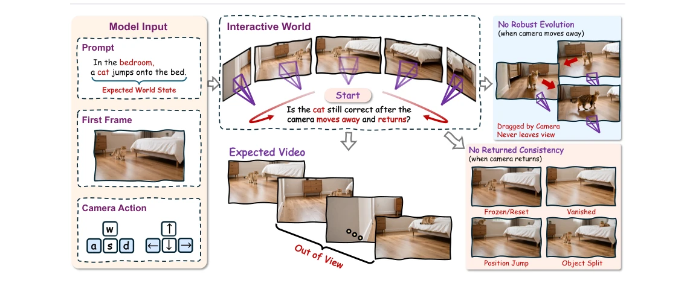
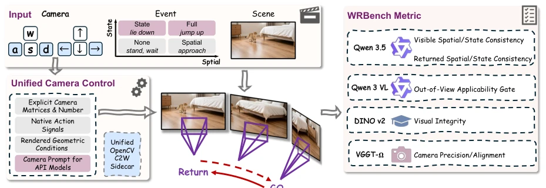
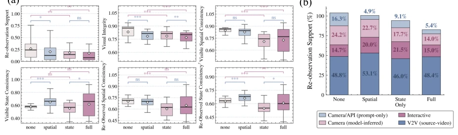
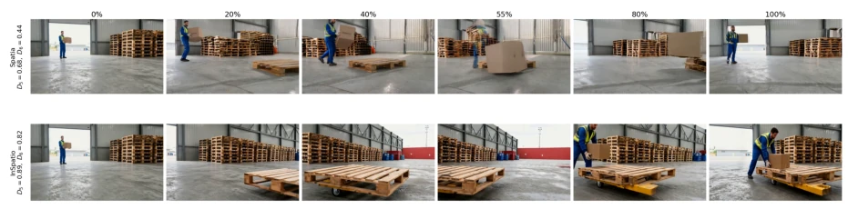
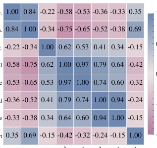
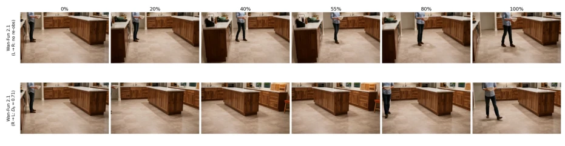
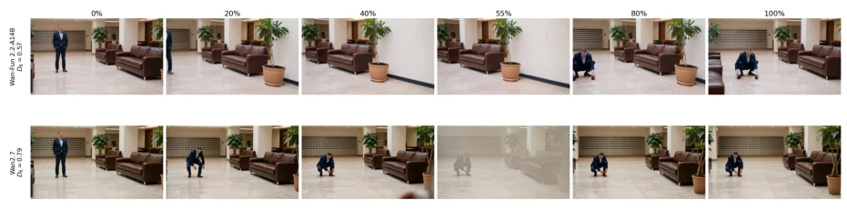
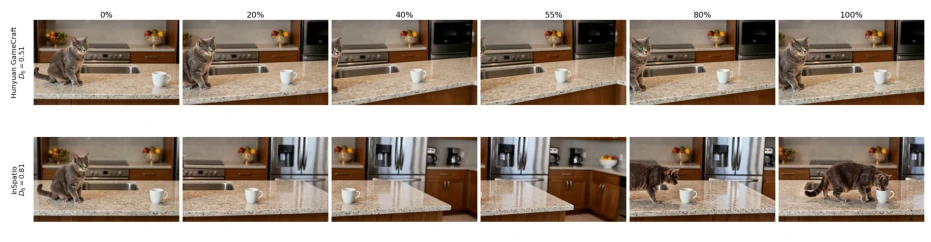
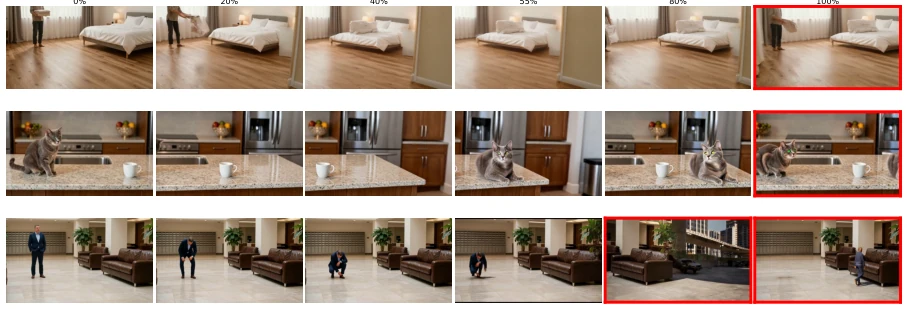
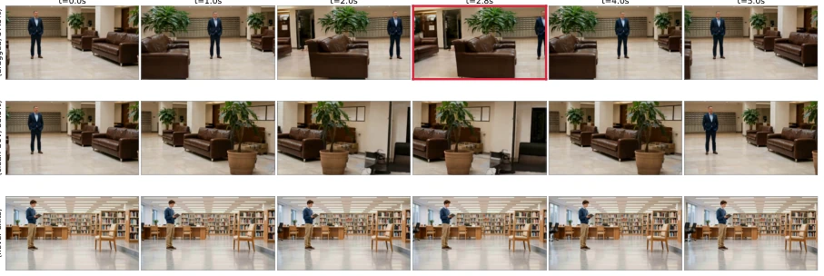

World models claim to be the key to AGI, but WRBench strips away the facade: they are merely "frame generators", not "world simulators". Does the moon disappear when the camera moves away? WRBench precisely targets the blind spots of existing benchmarks—praising visual fidelity only, without asking if the underlying state continues to evolve. The most damning aspect is that as model scale increased from 1.3B to 14B, re-observation consistency actually dropped. This is not just a bug; the architecture lacks a "persistent state core". Although the evaluation system is rigorous, relying on more pixels cannot solve the continuity of the physical world. Existing work [9] focuses on fidelity but ignores "evolution when invisible". This paper is like a medical check-up for enthusiasts; although it prescribes no cure, at least it diagnoses "world amnesia".
Existing video generation benchmarks such as VBench [9] focus on fidelity and motion, but do not test "evolution when invisible". World models need to be like Einstein's moon, existing even when not looked at. But existing work [1-8] mostly focuses on visible frame rendering, lacking evaluation of "state persistence under viewpoint intervention". This leads to objects potentially resetting in place or drifting when the camera turns back, unable to support the long-term memory and causal reasoning required for embodied intelligence. There is an urgent need for a diagnostic tool that can distinguish between "visible quality" and "invisible evolution".

Figure 1 WRBench Teaser. A shared scene, event, and viewpoint intervention test whether visible and returned evidence support the same evolving world state. The returned target must preserve the event endpoint, not merely reappear plausibly.
Proposes the WRBench diagnostic benchmark, containing a four-layer architecture. 1) Natural-25 prompt suite, defining scenes and events; 2) WRBenchLib unified tool, mapping heterogeneous controls (trajectories, source videos, prompts) to standardized inputs and recording evidence chains, solving the incomparability problem of different model interfaces; 3) Six-dimensional evaluation chain: camera accuracy, prompt alignment, visual integrity, visible spatiotemporal consistency, re-observation support, re-observation spatiotemporal consistency; 4) Human calibration. The core innovation lies in treating camera motion as an "observability intervention" rather than a rendering instruction, and separating "re-observation support" from "re-observation consistency", avoiding classifying the invisible as an error. Evaluation uses VGGT to recover trajectories, Qwen for visual question answering, DINOv2 for integrity detection. Human annotation of 2547 rulings calibrates automatic metrics, ensuring consistent evaluation granularity.

Figure 2 WRBench method overview. Natural-25 event-view records supply the scene, event, and viewpoint intervention; WRBenchLib translates each record into a generated video and provenance record per model; the evaluation suite scores six diagnostic dimensions from control execution to re-observed-s
实验Experiments
评估 23 模型、9600 视频。发现可见质量与重观察一致性弱相关（r=0.6-0.79），且重观察支持率与状态正确性解耦。空间位移事件表现优于原位状态变化（如折叠、倾倒），后者因缺乏新坐标锚点导致漂移。Wan 系列扩参未改善状态一致性。不同控制范式（源视频 vs 提示）主要影响重观察支持率，不改变状态一致性上限。证明当前架构缺乏“隐状态记忆”。
Evaluated 23 models, 9600 videos. Found visible quality and re-observation consistency weakly correlated (r=0.6-0.79), and re-observation support rate decoupled from state correctness. Spatial displacement events performed better than in-place state changes (such as folding, tipping), the latter causing drift due to lack of new coordinate anchors. Wan series parameter scaling did not improve state consistency. Different control paradigms (source video vs prompt) mainly affect re-observation support rate, not changing the state consistency upper bound. Proves current architecture lacks "latent state memory".

Figure 6 Event-factor pressure splits by factor. Boxplots show per-model metric distributions under the Natural-25 2 × 2 event design; bars summarize event-factor pressure on out-of-view behavior. Contrasts separate relocation from in-place state change; stars denote paired Wilcoxon tests (* p < 0.0

Figure 9 Re-observed consistency under matched re-observation (loading dock). A loading-dock box- placement task (full event, R→L yaw) on two source-video interfaces, where both rows create judgeable re-observation. Top (Spatia): the box returns mislocated and malformed, so re-observed consistency s
其他图片Other Figures

Figure 4 Metric correlation structure. Model- level Pearson correlations among WRBench diag- nostic metrics over the 23 evaluated rows. Visible and re-observed consistency form local blocks, while support remains separate from visual in- tegrity.

Figure 8 Directional re-observation-support contrast (Wan-Fun 2.1). A kitchen bowl-placement task (spatial event) under two yaw directions. Top (L→R): the subject is dragged with the camera and never exits, so no return is created and re-observed consistency is undefined. Bottom (R→L): the subject l

Figure 10 State-only re-observed contrast (Wan-Fun 2.2-A14B vs. Wan2.7). A fixed sofa-sitting task (state-only event, R→L yaw) under matched, judgeable re-observation. Top (Wan-Fun 2.2-A14B): the subject returns crouched on the open floor away from the sofa, so re-observed-state consistency stays lo

Figure 11 Re-observed event-state contrast (kitchen cup knock). The same cup-knock task (spatial event, R→L yaw) on two interfaces. Top (Hunyuan GameCraft): the knocked cup returns in an inconsistent state, so re-observed event-state stays low (D6 = 0.51). Bottom (InSpatio): the cup’s re-observed st

Figure 13 Distinct in-place failure modes across actions. Each row is one in-place clip on a strong model under a right-to-left yaw, with the red frame marking the failure: fold returns a wrong fold state, knock returns the cup upright so the change is silently erased, and sit loses the seated perso

Figure 14 Re-observation access is set by the camera channel. Evenly spaced frames over one camera sweep. Top (Gen3C, L→R): the camera does not swing far enough to move the subject out of frame, so no hidden-then-returned event is created (57.5% support). Middle (Gen3C, R→L): the same scene cleanly